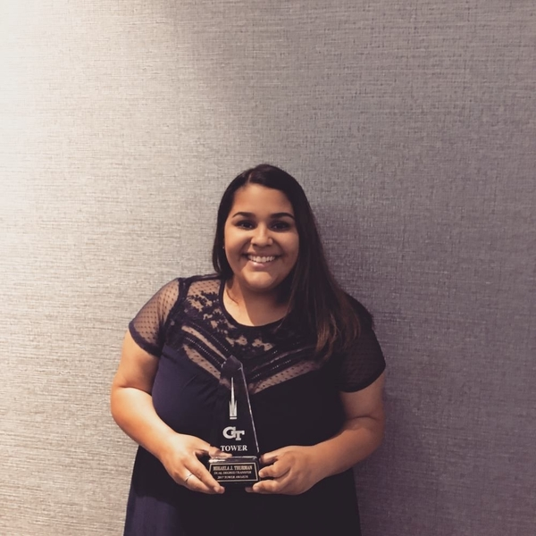

Learning about the vast prevalence of HIV/AIDS worldwide opened Dhrumi’s eyes to the kind of effect the infectious diseases have on all kinds of people. Though the world may be out of her reach, she believes small positive changes in society can go a long way, and that’s why she couldn’t pass up an opportunity to get involved and help raise awareness for HIV/AIDS, taking part in the unstoppable ripple effect. Feel free to contact her if you have any questions about Ripple Effect.
President
5th Year
Biochemistry
dpatel94@gatech.edu

Dhrumi
Claire Stoffers is the Director of Finance and a Biomedical Engineering major at Georgia Tech. She joined Ripple Effect because HIV/ AIDS is an issue that can easily be over-looked even though it affects so much of the world, and education and awareness is one of the best ways to prevent its spread.
Director of Finance
4th Year
Biomedical Engineering
cstoffers6@gatech.edu
Claire
Oladipo transferred from Atlanta Metropolitan State College in fall of 2016. He is a Chemical and Biomolecular Engineering student. Oladipo joined Ripple Effect in the spring of 2017 as the Secretary. He joined because he realized he wanted to be more involved on campus and Ripple Effect gave him that opportunity. He is interested in spreading awareness about HIV/AIDS on campus and in the community. He looks forward to working more for the organization on campus and off.

Oladipo
As a biology major and pre-med student Mikaela has always had an interest in the way various diseases impact the community. Upon transferring to Tech at the start of her third year she was looking for an organization and cause to dedicate her time to. With the high prevalence of HIV/AIDS in Atlanta, she felt this was a matter that needed attention. She believed, that by joining Ripple Effect, she could contribute her time to raise awareness and educate others on the issue. Mikaela hopes that this year she cannot only raise awareness about HIV/AIDs on Georgia Tech’s campus but also throughout her community.
Recruitment Chair
4th Year
Biology
mikaelathurman@gmail.com

Mikaela
When Aadarsh became aware of HIV/AIDs issues in the LGBT community, he realized he wanted to make an impact and reduce the effects of this harmful disease by joining the Ripple Effect club.
Web Developer
2nd Year
Computer Science
aspadiyath@gmail.com
Aadarsh
Fang joined Ripple Effect because he is interested in health advocacy and wanted to make a difference on campus.
Fundraising Chair
2nd Year
Biomedical Engineering
fangshi@gatech.edu

Fang